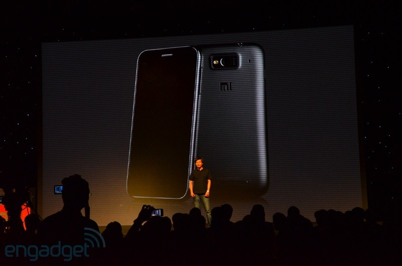
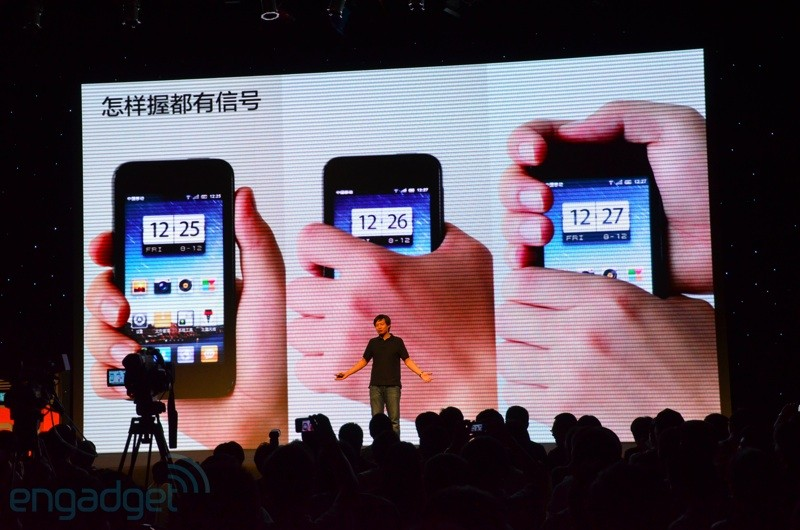
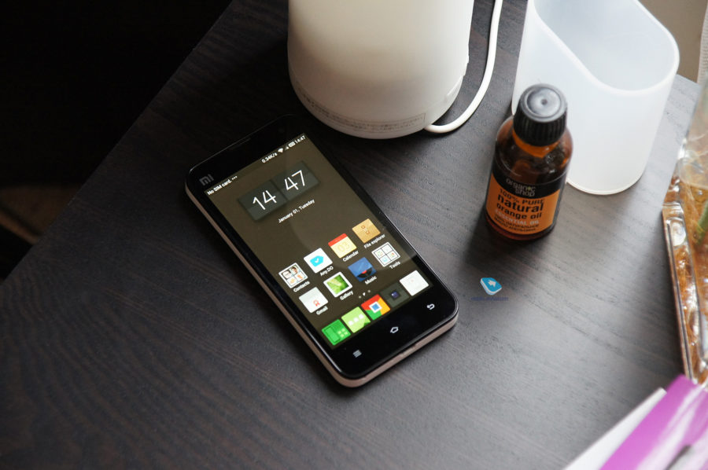
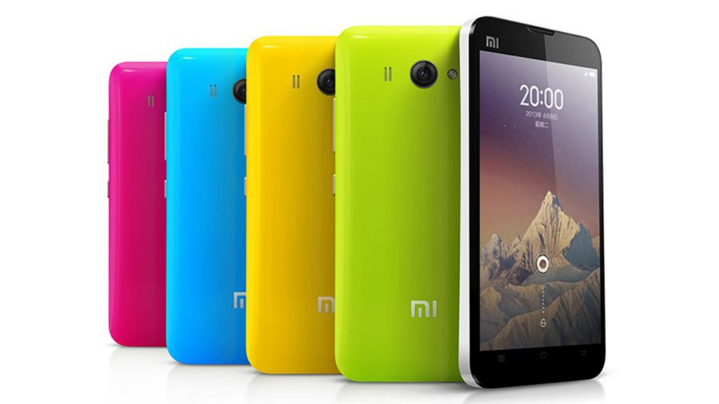

Начало производство смартфнов
6 августа 2011 года компания Xiaomi организовала небольшое мероприятие, так называемый митап для фанатов, но там были и журналисты. По фотографиям сложно сказать, сколько пришло человек, но их было много.
На презентации компания анонсировала первый смартфон Xiaomi Phone (Mi1 или Mi-One).
Директор компании акцентировал внимание, что их смартфон оснащается большим аккумулятором 1930 мАч и реально проработает два дня от одного заряда, тогда как конкуренты ставят батареи 1400-1500 мАч. Остальные характеристики были отличными для того времени: 4-дюймовый экран от Sharp с разрешением 480×854 пикселей, 8 Мп основная камера с объективом F2.4 и двухъядерный процессор Qualcomm MSM8260 на частоте до 1,5 ГГц, а также 4 ГБ постоянной и 1 ГБ оперативной памяти. На презентации не забыли подшутить над компанией Apple и пропаданием сигнала в iPhone 4 при определенном хвате.
Также Xiaomi Phone радовал пользователей приятными и полезными мелочами. Например, в памяти смартфона было место для дополнительной прошивки, так что владелец мог пробовать обновления MIUI или кастомы от других разработчиков без шанса остаться с неработоспособным устройством. У смартфона был даже ГЛОНАСС, который в то время ставили далеко не во все флагманы.
Журналист Engadget в репортаже с мероприятия даже пошутил, что президент России Дмитрий Медведев сможет хорошо ориентироваться по своей стране, пока обновляет свой Twitter. Модель оказалось удачной, несмотря на то, что его не продавали сначала через обычные магазины, а собирали предзаказы. За первые 34 часа после старта продаж собрано 300 тысяч предзаказов. Для первого смартфона это неплохие результаты, но далеко на фантастические, учитывая, что пользователи не платили деньги, а только бронировали очередь за покупкой. Поставлять смартфоны начали только в октябре и небольшими партиями.
По-настоящему народным смартфоном стал Xiaomi Mi2 (Mi-Two). Его представили ровно через год после анонса первого смартфона.
Успешный выход на рынок мобильных устройств позволил директору Xiaomi, Лей Цзюню, в будущем стать одним из самых успешных предпринимателей Китая за всю историю. По данным Forbes, на начало 2018 года его состояние оценивается в 7 миллиардов долларов.
Директор компании акцентировал внимание, что их смартфон оснащается большим аккумулятором 1930 мАч и реально проработает два дня от одного заряда, тогда как конкуренты ставят батареи 1400-1500 мАч. Остальные характеристики были отличными для того времени: 4-дюймовый экран от Sharp с разрешением 480×854 пикселей, 8 Мп основная камера с объективом F2.4 и двухъядерный процессор Qualcomm MSM8260 на частоте до 1,5 ГГц, а также 4 ГБ постоянной и 1 ГБ оперативной памяти. На презентации не забыли подшутить над компанией Apple и пропаданием сигнала в iPhone 4 при определенном хвате.

Но смартфон полюбили не за характеристики, а разумный баланс между характеристиками и ценой. По предзаказу базовая модель продавалась по цене примерно в 310 долларов, вспоминаем курс «по тридцать» и получаем флагманский смартфон дешевле 10 тысяч рублей. Хотя в России Xiaomi Phone было достать не так просто, да и цена была намного выше.
Также Xiaomi Phone радовал пользователей приятными и полезными мелочами. Например, в памяти смартфона было место для дополнительной прошивки, так что владелец мог пробовать обновления MIUI или кастомы от других разработчиков без шанса остаться с неработоспособным устройством. У смартфона был даже ГЛОНАСС, который в то время ставили далеко не во все флагманы.
Журналист Engadget в репортаже с мероприятия даже пошутил, что президент России Дмитрий Медведев сможет хорошо ориентироваться по своей стране, пока обновляет свой Twitter. Модель оказалось удачной, несмотря на то, что его не продавали сначала через обычные магазины, а собирали предзаказы. За первые 34 часа после старта продаж собрано 300 тысяч предзаказов. Для первого смартфона это неплохие результаты, но далеко на фантастические, учитывая, что пользователи не платили деньги, а только бронировали очередь за покупкой. Поставлять смартфоны начали только в октябре и небольшими партиями.
По-настоящему народным смартфоном стал Xiaomi Mi2 (Mi-Two). Его представили ровно через год после анонса первого смартфона.

Xiaomi Mi2 продолжал идею предшественника: недорогой смартфон с крутыми характеристиками и множеством возможностей для гиков. В базовой модификации он стоил столько же — 1999 юаней, все еще около 10 тысяч рублей по курсу того времени.
Первую партию в 50 тысяч смартфонов Xiaomi Mi2 раскупили всего 3 минуты. Это был успех.
В середине января 2013 года ретейлер Mobicity заявил, что займется официальными поставками смартфона Xiaomi Mi2 в Британию и Австралию. До этого смартфоны Xiaomi официально продавались только в Китае.
В апреле того же года состоялась презентация двух модификаций второй модели — более мощный Xiaomi Mi2S и более доступный Mi2A. Эта линейка окончательно закрепила успех компании, и уже в сентябре они отчитались о 10 миллионах проданных экземпляров Xiaomi Mi2, Mi2A и Mi2S.

Xiaomi Mi2 стал, возможно, самым знаковым аппаратом в истории Xiaomi. Именно с его запуска компания начала расти и развиваться. Летом 2017 года Лей Цзюнь, директор Xiaomi, заявил, что смартфонами Mi2 и Mi2S до сих пор пользуются 5 миллионов человек и они получат обновление до новой системы MIUI 9. Даже iPhone 5, который вышел примерно в одно время с Mi2, не получил обновление до iOS 11.
Успешный выход на рынок мобильных устройств позволил директору Xiaomi, Лей Цзюню, в будущем стать одним из самых успешных предпринимателей Китая за всю историю. По данным Forbes, на начало 2018 года его состояние оценивается в 7 миллиардов долларов.